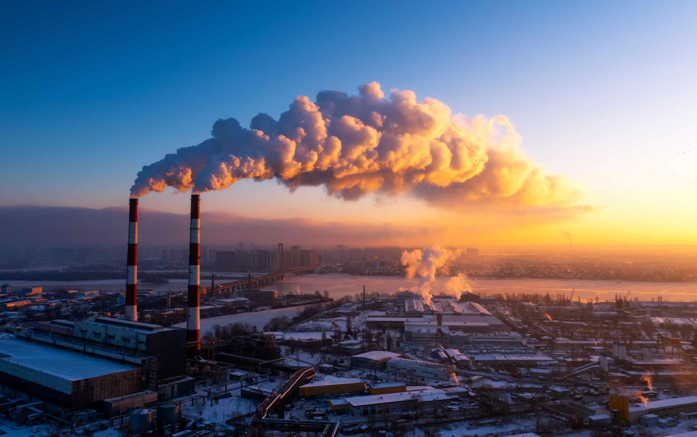
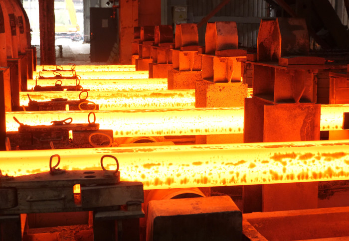

Uzroci Klimatskih Promjena
Emisije stakleničkih plinova, kao što su ugljični dioksid (CO2), metan (CH4) i dušikovi oksidi (NOx), najviše pridonose globalnom zatopljenju. Ovi plinovi zadržavaju toplinu u atmosferi, što rezultira porastom prosječnih temperatura diljem svijeta. Fosilna goriva, kao što su ugljen, nafta i prirodni plin, najveći su izvori ovih emisija. Spaljivanje fosilnih goriva za energiju u elektranama, automobilima i industrijskim postrojenjima oslobađa velike količine CO2 u atmosferu.

Krčenje šuma dodatno pogoršava situaciju jer šume djeluju kao “pluća” našeg planeta, upijajući CO2 i oslobađajući kisik. Uništavanje šuma smanjuje njihovu sposobnost apsorpcije ugljika, što povećava koncentraciju CO2 u atmosferi. Svake godine, milijuni hektara šuma se krče zbog poljoprivredne ekspanzije, urbanizacije i ilegalne sječe, čime se gubi dragocjeni prirodni resurs za regulaciju klime.
Industrijske aktivnosti, uključujući proizvodnju cementa, čelika i kemikalija, također doprinose emisijama stakleničkih plinova. Ove aktivnosti ne samo da ispuštaju velike količine CO2, već i druge zagađivače koji dodatno pogoršavaju kvalitetu zraka. Industrijski procesi često koriste velike količine energije, a njihov otpad može zagađivati vodu i tlo.
Još jedan značajan uzrok klimatskih promjena je poljoprivreda. Poljoprivredne aktivnosti, uključujući stočarstvo, proizvodnju riže i upotrebu umjetnih gnojiva, ispuštaju velike količine metana i dušikova oksida. Stočarstvo, posebno uzgoj goveda, doprinosi metanu kroz probavne procese životinja, dok korištenje umjetnih gnojiva oslobađa dušikove okside u atmosferu.